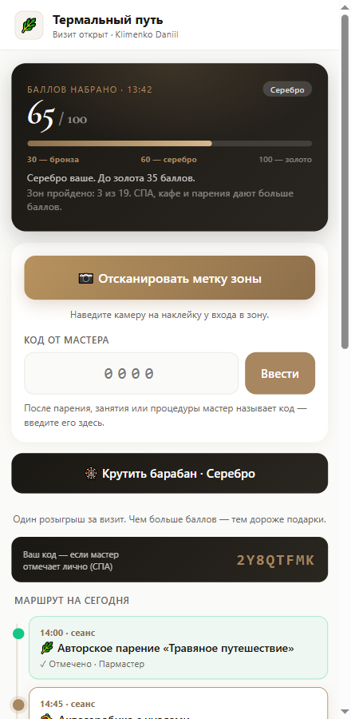
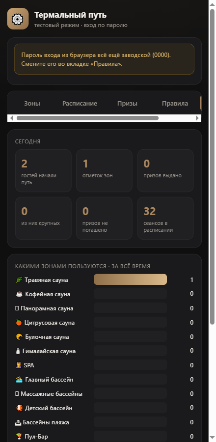
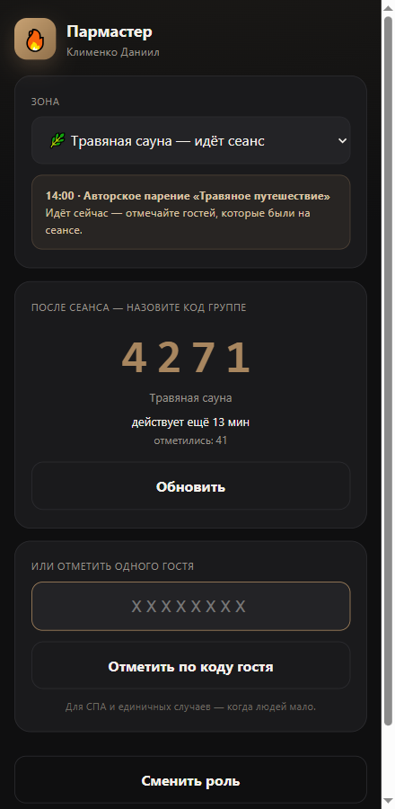
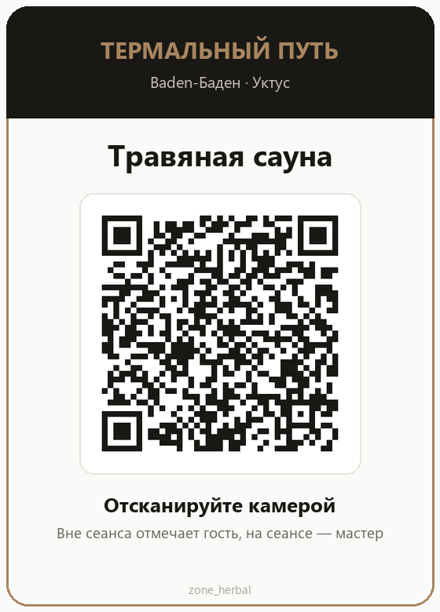
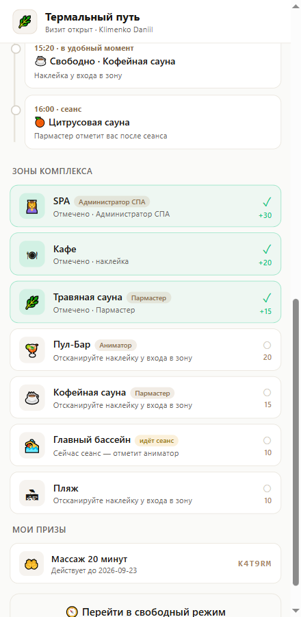
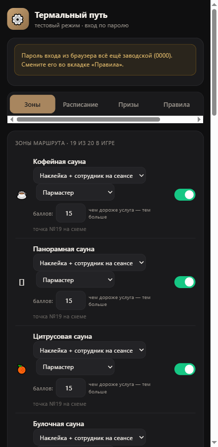

Игра-маршрут по комплексу: гость проходит зоны, набирает баллы и получает подарок. Мы — удлиняем визит, загружаем СПА и впервые видим, чем гости реально пользуются.
Сколько людей за день заходит в соляную, а сколько в хамам — не знает никто. Решения по ремонту, персоналу и расписанию принимаются на ощущение.
Загрузка СПА — доли процента. Гость проходит мимо двери, потому что не знает, что там есть и что сейчас свободно.
Гость приходит на 2–3 часа и обходит две-три ближние зоны. Половина комплекса остаётся неувиденной, а чек — несформированным.
Отчёты показывают выручку и посещаемость, но не поведение. Мы видим, что гость пришёл, — и не видим, что он делал внутри.
В боте лояльности появляется «Термальный путь». Гость отмечается в зонах, копит баллы и на пороге крутит барабан с подарком.

Зоны стоят по-разному. Простой заход в бассейн и оплаченная процедура — не одно и то же, и система это различает.
| Зона | Баллы | Почему |
|---|---|---|
| СПА | 30 | платная процедура |
| Кафе, бары, Пул-Бар | 20 | гость покупает |
| Сауны с парением | 15 | время и работа мастера |
| Бассейны, пляж, отдых | 10 | просто заход |
Одно посещение СПА открывает барабан сразу. Без трат до него нужно три зоны.
Три пула призов. Чем больше баллов набрал гость — тем дороже подарки в барабане.
Заметная часть этой суммы — чай, СПА в непик и будний вход: незанятые мощности, а не живые деньги. Игра перекладывает спрос из пиков в провалы.
Пауза между отметками и маршрут по расписанию физически растягивают пребывание. Дольше визит — выше вероятность покупки в баре и СПА.
Платные зоны дают втрое больше баллов. Гостю выгодно зайти в СПА и кафе — и он идёт туда сам, без уговоров персонала.
Тепловая карта посещений — то, чего сегодня нет ни в одном отчёте. Видно, какие зоны работают, а какие простаивают.
Приз действует 30 дней. Это не скидка «в никуда», а конкретный повод прийти ещё раз в ближайший месяц.
Каждая отметка — строка в базе: какая зона, во сколько, был ли сеанс, кто отметил. Из этого собирается картина дня.
Это работает даже без призов. Первая фаза даёт данные, даже если барабан ещё выключен.

Главный риск любой такой механики — гость отмечается, не выходя из раздевалки, по фотографии чужого QR. Пять рубежей закрывают этот сценарий.
Играет лишь тот, кого кассир отметил на входе сегодня. Из дома — не получится.
Маршрут нельзя пройти быстрее, чем его проходят ногами.
Назвали после парения — через 15 минут он мёртв. Унести домой нечего.
Повторная отметка не даёт ничего.
С одним кодом не обойти бар, стойку и СПА по очереди.
Приз выбирает не браузер. Через консоль телефона результат не подкрутить.
| Готово | |
|---|---|
| Игра в боте лояльности | работает |
| Рабочее место персонала | работает |
| Настройки: зоны, призы, правила | работает |
| Расписания парений и анимации | внесены |
| Наклейки на 19 зон | напечатать |
| Доступ гостям | выключен |
Сейчас систему видят только два администратора. Гости кнопку не видят вовсе — обкатка идёт незаметно для зала.
Игра живёт в отдельных таблицах и отдельных страницах. Касса, регистрация гостей и карта лояльности работают ровно как раньше — это проверяется автоматически при каждом запуске.
Откат на любом этапе — одна команда. Игра выключается переключателем, работающая лояльность при этом не затрагивается.
Сейчас в списке 11 позиций: чай, лимонад, десерт, пицца, скидки, СПА в непик, массаж, мерч, полотенце, бесплатный будний вход. Что оставляем, что убираем, что добавить.
Средний розыгрыш — около 100 ₽ на участника, значительная часть из них закрывается незанятыми мощностями. Нужен потолок на день или месяц.
Кто ведёт расписание сеансов, кто следит за призами на стойке, кто отвечает за наклейки в зонах.
Механика построена так, что подарок получают все дошедшие — случаен только его вид. Тексты для гостей стоит показать юристу.
Почти ничего. У большинства — одно новое действие в день, и оно занимает несколько секунд.
После парения из парной выходит полсотни человек. Никого сканировать не нужно — вы просто называете код вслух, один раз.

| Код нужно менять каждый раз? | Нет. Он живёт 15 минут, кнопка отдаёт тот же самый — подошедшему позже диктовать новый не нужно. |
| А если гость услышал код и не был на парении? | Он всё равно должен быть в комплексе с отмеченным визитом. Максимум — сосед по залу. Это допустимо. |
| Нужен ли мне телефон в парной? | Нет. Код показывается после сеанса, на планшете или телефоне в зоне отдыха. |
| Что если гость не разобрался? | Скажите ему открыть бота лояльности и нажать «Термальный путь». Поле для кода — на первом экране. |

Гость показывает свой код из карточки лояльности (восемь символов). Вы вводите его в рабочем месте — отметка ставится сразу. СПА даёт гостю больше всего баллов, это стоит проговаривать.
Гость называет код из шести символов. Вы вводите его, видите приз, имя гостя и срок, нажимаете «Погасить». Код срабатывает один раз — повторно им воспользоваться нельзя.

Зоны, баллы, расписание, призы, шансы и пороги меняются в одном разделе. Изменение вступает в силу сразу.

Система работает, наклейки напечатаны, персоналу нужно одно новое действие. Осталось пройти комплекс своими ногами и открыть гостям.
Baden-Баден · Уктус · август 2026